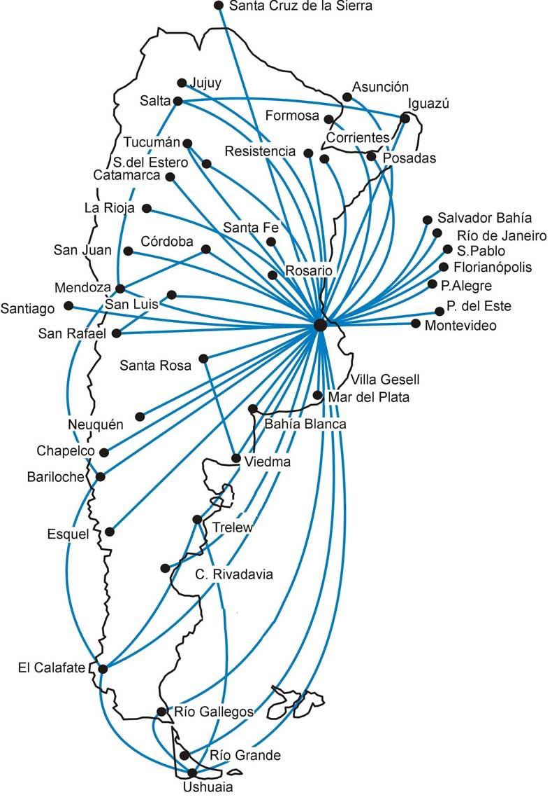

Aerolíneas Argentinas
Aerolíneas Argentinas conecta destinos nacionales e internacionales mediante servicios modernos, digitales y accesibles para todos los pasajeros.

Destinos principales
Buenos Aires
Bariloche
Córdoba
Mendoza
Ushuaia
Santiago de Chile

Aeropuertos y terminales
Aeroparque Jorge Newbery
Ezeiza Internacional
Aeropuerto de Córdoba
Aeropuerto de Bariloche
Horarios y frecuencia
| Destino | Frecuencia |
|---|---|
| Bariloche | 6 vuelos diarios |
| Córdoba | 8 vuelos diarios |
| Mendoza | 5 vuelos diarios |
| Ushuaia | 3 vuelos diarios |
Mapa y ubicación
La aerolínea opera rutas nacionales e internacionales conectando los principales centros turísticos y urbanos.


Accesibilidad
Rampas de acceso.
Espacios para silla de ruedas.
Señalización clara.
Información visual y sonora.
Asistencia personalizada.

Servicios digitales
Check-in online.
Tarjeta de embarque digital.
Seguimiento de vuelos.
Gestión de equipaje.